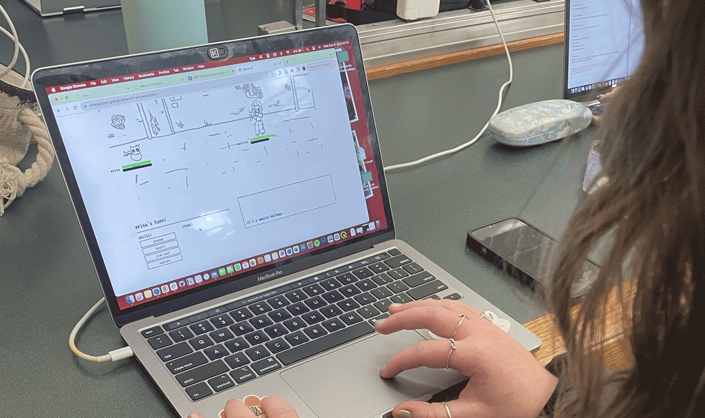

Final Project Report
User Testing: Game On!
Key Findings
- Users found several mechanics of the game confusing and would benefit from more guidance.
- Some UI choices led to certain text or other aspects of the game being hidden.
- The story / narrative could be developed more.
- Users wanted a clear ending to the game.
Participants
Two users, Erica and Ivy, were asked to play the game.
Both are 21-year-old students with some gaming experience. They played the game on their laptops, and both are upper-middle-income background with some college education.
Tasks
Participants were asked to play the game until either they reached a conclusion or they were bored. Participants were not given help or communication. One participant lost the game early on while the other defeated all the stages.
Results - Bugs
- The game would freeze if all allies were defeated.
Results - Usability Issues
- Users found certain aspects of the game, such as the action bar, confusing.
- One participant didn’t realize there were more action options because part of their screen was cut off.
- Using enter to submit the name input would be intuitive.
- One user wasn't aware that the moves could be hovered over for a description.
Results - Other Feedback
- The lack of a win or loss screen was confusing.
- Users were not sure what the story/narrative was and hoped it could make more sense.
- Participants found it weird there could be more than one of the same character.